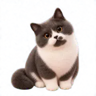

FRAME
问题框定
把模糊想法压缩成目标用户、业务约束、成功信号和排除项。
执行越来越便宜的时代，我关注三件事：定义问题、设定标准、验收结果。这里记录我的 AI 产品方法、天天在用的 Skills 和可玩的作品。
做难而正确的事—— 我的行事准则
我把产品经理的常见工作拆成可委托、可验收、可复盘的模块，让 AI 不是回答问题，而是接住一段完整工作。
FRAME
把模糊想法压缩成目标用户、业务约束、成功信号和排除项。
RESEARCH
竞品、行业、用户访谈和公开信息，不止收集，更要标注置信度。
PROTOTYPE
把一个需求推进到可体验版本，用真实反馈替代纸面争论。
实例 → 作品区SKILL
把第三次重复出现的任务，写成可复用流程、标准和模板。
实例 → Skills 武器库方法论需要被做成东西。这里放我用 AI 推进到「能用、能玩」的作品：桌面应用、可玩 Demo 和工作流实验。
一只浮在桌面右下角的英短猫：单击它就能语音聊天，用中文口语建/查/删提醒；本地提醒引擎全离线运行，到点用系统语音主动播报，断网也响。安静时，它就在桌面卖萌。

类 Minecraft 网页沙盒，内置一个可观测、可撤回、可断点续接的 AI Agent 小人：给它一句目标，它就逐步施工，过程全程留痕、随时能撤回、刷新也能从断点接着干。
进入世界一个能开口的「我」：访客直接和分身语音对话，它用我的克隆音色实时作答；它说什么、不说什么，由一份逐条核查过的个人事实库划定边界。端到端与级联双引擎一键切换、延迟逐段可观测——这组架构取舍本身，就是产品的一部分。
方法库里说「沉淀为 Skill」不是口号——这些是我天天在用的自动化资产，每一个都替我接住一段完整工作。
SKILL://信息日报DAILY维护一份订阅名单（公众号、网站、播客、GitHub……），每天自动轮询当日最新内容，筛掉噪音，写成「不点开也能判断要不要深读」的摘要，推送到飞书。
SKILL://信息处理ON DEMAND丢给它一个链接——抖音、B站、播客、公众号都行——自动抓取正文、本地转写音视频、识别图片，产出「文字稿 + 要点总结」直接进 Obsidian 知识库。
SKILL://爆款实验室LOOP把内容创作变成可校准的预测循环：发布前盲预测数据，三天后复盘，持续进化评分标准。
已开源 ↗SKILL://复利复盘NIGHTLY每晚把一天的行动自动分进「复利 / 必要 / 损耗」三个桶写进日记，看清哪些动作在攒资产。
SKILL://发布前体检GATE仓库公开前的最后一道闸：扫描个人信息、密钥、敏感配置，红灯就不准发。
已开源 ↗一个把「做难而正确的事」当操作系统内核的 AI 产品经理。
我是 lixudong，AI 产品经理。在执行越来越便宜的时代，我押注三件事：定义问题、设定标准、验收结果。重复第三次的工作流，就沉淀成 Skill；值得做的想法，就用 AI 一路推进到能用、能玩、能上线。这个站就是这套工作方式的公开档案，持续更新。